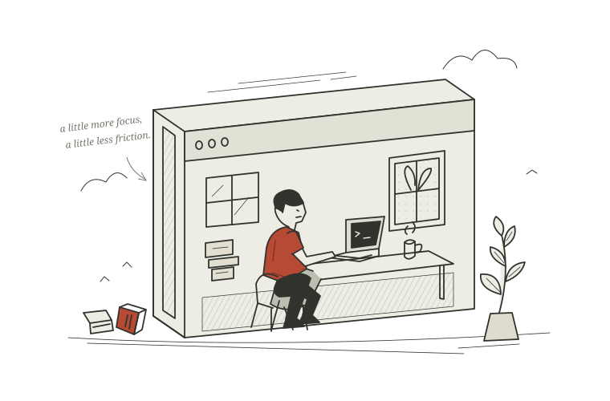

THE EDITOR’S NOTE 编者按
好工具，
懂得把主动权
留给你。
开发者的工作，不应该在复制、粘贴与反复解释之间消耗。
MClaude 走进你的工作目录，理解上下文，协助完成那些具体而微的工作。你决定方向，它负责把思路向前推进。
认识它的工作方式 →Less friction.
More thinking.
More thinking.
THE EDITOR’S NOTE 编者按
开发者的工作，不应该在复制、粘贴与反复解释之间消耗。
MClaude 走进你的工作目录，理解上下文，协助完成那些具体而微的工作。你决定方向，它负责把思路向前推进。
认识它的工作方式 →
A SMALL WORKSHOP. A WORLD OF POSSIBILITIES.MEET MCLAUDE 本期主角
一个住在终端里的编程搭档。
从理解项目到落笔修改，让想法在本地生长。
“让工具进入你的工作流，让专注回到你的手中。”
THE MCLAUDE PHILOSOPHYTHE FIELD NOTES
01 — CONTEXT
读取、发现与搜索工作区文件，分层加载 AGENTS.md 和 CLAUDE.md。项目有自己的约定，搭档也应该懂。
文件搜索 / 项目规则 / 按需技能02 — CONTROL
先规划，再执行。写入和命令运行前逐次确认；编辑检查点与冲突检测，让每一次修改都有迹可循。
只读规划 / 权限确认 / 编辑检查点03 — CONTINUITY
可恢复的交互式会话、任务跟踪与自动上下文压缩。暂停不等于重来，复杂任务也可以一步一步完成。
会话恢复 / 任务跟踪 / 上下文管理A DAY IN THE TERMINAL 终端日常
不必离开熟悉的工作目录。
说清目标，一起把问题拆开。
❯
首次启动会引导你配置 API Key、模型 ID 和可选 API 地址。
配置保存在本机；模型请求通过 Anthropic Messages API 发送。
已有会话？运行 uv run mclaude --continue 即可继续。
A FEW GOOD QUESTIONS
文件操作在本地工作区中进行，会话与配置保存在本机。模型推理依赖 Anthropic Messages API，相关对话与代码上下文会发送到你配置的 API 服务，因此并非离线模型。
读取类工具默认允许；写文件、恢复检查点和运行命令会逐次请求确认。你也可以使用 --plan 进入只读规划模式。命令执行受工作区目录限制，但并非操作系统沙箱，请在授权前查看完整命令。
可以。MClaude 支持分层项目规则、按需技能，以及显式配置的生命周期 Hooks 和 stdio MCP。规划模式不会运行 Hooks 或启动 MCP 服务。配置示例请参阅 项目文档 ↗。